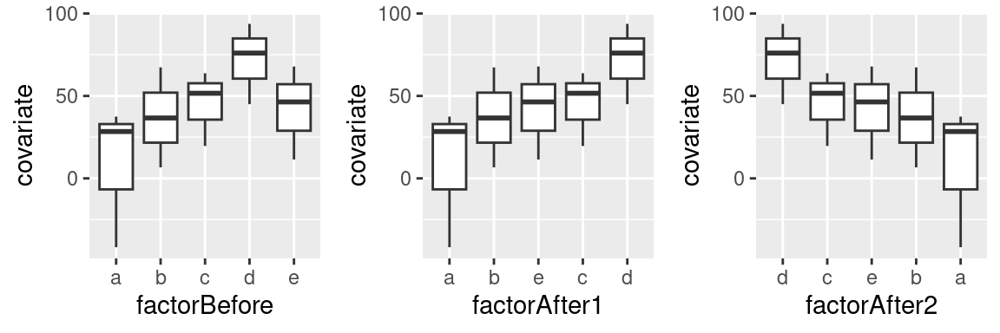
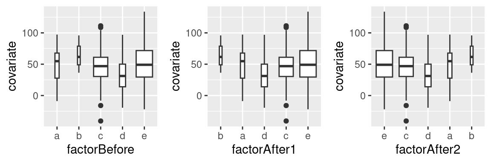

install.packages(c("tidyverse"))R tip: Ordering factor levels more easily
R
graphics
By default, R sorts the levels of a factor alphabetically. When drawing graphs, this results in ‘Alabama First’ graphs, and it’s usually better to sort the elements of a graph by more meaningful principles than alphabetical order. This post illustrates three convenience functions you can use to sort factor levels in R according to another covariate, their frequency of occurrence, or manually.
Update (2023-08-08): The reorder() function has pretty much the same functionality as the functions introduced in this blog post. In the original blog post, I loaded some packages that are now part of the tidyverse suite separately; now I just use the tidyverse.
First you’ll need the tidyverse:
You can download the convenience functions from my Github page or read them in directly into R:
source("https://janhove.github.io/RCode/sortLvls.R")Sorting factor levels by another variable
The code below creates an example dataset with a factor and a covariate:
# Load packages
library(tidyverse)
# Generate same data
set.seed(18-08-2016)
# Create data frame
df <- data.frame(factorBefore = factor(rep(letters[1:5], 3)),
covariate = rnorm(15, 50, 30))
# Current order of factor levels (alphabetically)
levels(df$factorBefore)[1] "a" "b" "c" "d" "e"# Covariate mean per factor level
df |> group_by(factorBefore) |> summarise(mean(covariate))# A tibble: 5 × 2
factorBefore `mean(covariate)`
<fct> <dbl>
1 a 8.04
2 b 36.9
3 c 45.0
4 d 71.6
5 e 41.9 What we want is to sort the levels of the factor by the covariate mean per factor level (i.e., a-b-e-c-d). The function sortLvlsByVar.fnc accomplishes this:
# Reorder
df$factorAfter1 <- sortLvlsByVar.fnc(df$factorBefore, df$covariate)Loading required package: magrittr
Attaching package: 'magrittr'The following object is masked from 'package:purrr':
set_namesThe following object is masked from 'package:tidyr':
extract# New order of factor levels
levels(df$factorAfter1)[1] "a" "b" "e" "c" "d"By setting the ascending parameter to FALSE, the factor levels are sorting descendingly according to the covariate mean:
# Reorder descendingly
df$factorAfter2 <- sortLvlsByVar.fnc(df$factorBefore, df$covariate, ascending = FALSE)
levels(df$factorAfter2)[1] "d" "c" "e" "b" "a"How this looks like when graphed:
# Alphabetical order
p1 <- ggplot(df, aes(x = factorBefore, y = covariate)) +
geom_boxplot()
# Sorted ascendingly
p2 <- ggplot(df, aes(x = factorAfter1, y = covariate)) +
geom_boxplot()
# Sorted descendingly
p3 <- ggplot(df, aes(x = factorAfter2, y = covariate)) +
geom_boxplot()
gridExtra::grid.arrange(p1, p2, p3, ncol = 3)
You can change the R code from the Github page so that the levels are sorted by another summary statistics, e.g., the covariate median per factor level.
Sorting factor levels by their frequency of occurrence
Again we’ll first create some data:
df2 <- data.frame(factorBefore = factor(rep(letters[1:5], c(7, 3, 80, 15, 107))),
covariate = rnorm(sum(c(7, 3, 80, 15, 107)), 50, 30))
table(df2$factorBefore)
a b c d e
7 3 80 15 107 We want to order these factor levels by their frequency of occurrence in the dataset (i.e., b-a-d-c-e). sortLvlsByN.fnc() accomplishes this:
df2$factorAfter1 <- sortLvlsByN.fnc(df2$factorBefore)
table(df2$factorAfter1)
b a d c e
3 7 15 80 107 Or descendingly:
df2$factorAfter2 <- sortLvlsByN.fnc(df2$factorBefore, ascending = FALSE)
table(df2$factorAfter2)
e c d a b
107 80 15 7 3 When plotted:
p4 <- ggplot(df2, aes(x = factorBefore, y = covariate)) +
geom_boxplot(varwidth = TRUE)
p5 <- ggplot(df2, aes(x = factorAfter1, y = covariate)) +
geom_boxplot(varwidth = TRUE)
p6 <- ggplot(df2, aes(x = factorAfter2, y = covariate)) +
geom_boxplot(varwidth = TRUE)
gridExtra::grid.arrange(p4, p5, p6, ncol = 3)
Customising the order of factor levels
If you want to put the factor levels in a custom order, you can use the sortLvls.fnc() function.
# Create data
df3 <- data.frame(factorBefore = factor(rep(letters[1:5], 3)),
covariate = rnorm(15, 50, 30))
levels(df3$factorBefore)[1] "a" "b" "c" "d" "e"Let’s say we, for some reason, want to put the current 5th level (e) first, the current 3rd level (c) second, the 4th 3rd, the 4th 2nd and the 1st last:
df3$factorAfter1 <- sortLvls.fnc(df3$factorBefore, c(5, 3, 4, 2, 1))
levels(df3$factorAfter1)[1] "e" "c" "d" "b" "a"You can also just specify which factor levels need to go up front; the order of the other ones stays the same:
# Put the current 3rd and 2nd in front; leave the rest as they were:
df3$factorAfter2 <- sortLvls.fnc(df3$factorBefore, c(3, 2))
levels(df3$factorAfter2)[1] "c" "b" "a" "d" "e"Software versions
devtools::session_info()─ Session info ───────────────────────────────────────────────────────────────
setting value
version R version 4.3.1 (2023-06-16)
os Ubuntu 22.04.2 LTS
system x86_64, linux-gnu
ui X11
language en_US
collate en_US.UTF-8
ctype en_US.UTF-8
tz Europe/Zurich
date 2023-08-08
pandoc 3.1.1 @ /usr/lib/rstudio/resources/app/bin/quarto/bin/tools/ (via rmarkdown)
─ Packages ───────────────────────────────────────────────────────────────────
package * version date (UTC) lib source
cachem 1.0.6 2021-08-19 [2] CRAN (R 4.2.0)
callr 3.7.3 2022-11-02 [1] CRAN (R 4.3.1)
cli 3.6.1 2023-03-23 [1] CRAN (R 4.3.0)
colorspace 2.1-0 2023-01-23 [1] CRAN (R 4.3.0)
crayon 1.5.2 2022-09-29 [1] CRAN (R 4.3.1)
devtools 2.4.5 2022-10-11 [1] CRAN (R 4.3.1)
digest 0.6.29 2021-12-01 [2] CRAN (R 4.2.0)
dplyr * 1.1.2 2023-04-20 [1] CRAN (R 4.3.0)
ellipsis 0.3.2 2021-04-29 [2] CRAN (R 4.2.0)
evaluate 0.15 2022-02-18 [2] CRAN (R 4.2.0)
fansi 1.0.4 2023-01-22 [1] CRAN (R 4.3.1)
farver 2.1.1 2022-07-06 [1] CRAN (R 4.3.0)
fastmap 1.1.0 2021-01-25 [2] CRAN (R 4.2.0)
forcats * 1.0.0 2023-01-29 [1] CRAN (R 4.3.0)
fs 1.5.2 2021-12-08 [2] CRAN (R 4.2.0)
generics 0.1.3 2022-07-05 [1] CRAN (R 4.3.0)
ggplot2 * 3.4.2 2023-04-03 [1] CRAN (R 4.3.0)
glue 1.6.2 2022-02-24 [2] CRAN (R 4.2.0)
gridExtra 2.3 2017-09-09 [1] CRAN (R 4.3.0)
gtable 0.3.3 2023-03-21 [1] CRAN (R 4.3.0)
hms 1.1.3 2023-03-21 [1] CRAN (R 4.3.0)
htmltools 0.5.5 2023-03-23 [1] CRAN (R 4.3.0)
htmlwidgets 1.6.2 2023-03-17 [1] CRAN (R 4.3.1)
httpuv 1.6.11 2023-05-11 [1] CRAN (R 4.3.1)
jsonlite 1.8.7 2023-06-29 [1] CRAN (R 4.3.1)
knitr 1.39 2022-04-26 [2] CRAN (R 4.2.0)
labeling 0.4.2 2020-10-20 [1] CRAN (R 4.3.0)
later 1.3.1 2023-05-02 [1] CRAN (R 4.3.1)
lifecycle 1.0.3 2022-10-07 [1] CRAN (R 4.3.0)
lubridate * 1.9.2 2023-02-10 [1] CRAN (R 4.3.0)
magrittr * 2.0.3 2022-03-30 [1] CRAN (R 4.3.0)
memoise 2.0.1 2021-11-26 [2] CRAN (R 4.2.0)
mime 0.10 2021-02-13 [2] CRAN (R 4.0.2)
miniUI 0.1.1.1 2018-05-18 [1] CRAN (R 4.3.1)
munsell 0.5.0 2018-06-12 [1] CRAN (R 4.3.0)
pillar 1.9.0 2023-03-22 [1] CRAN (R 4.3.0)
pkgbuild 1.4.2 2023-06-26 [1] CRAN (R 4.3.1)
pkgconfig 2.0.3 2019-09-22 [2] CRAN (R 4.2.0)
pkgload 1.3.2.1 2023-07-08 [1] CRAN (R 4.3.1)
prettyunits 1.1.1 2020-01-24 [2] CRAN (R 4.2.0)
processx 3.8.2 2023-06-30 [1] CRAN (R 4.3.1)
profvis 0.3.8 2023-05-02 [1] CRAN (R 4.3.1)
promises 1.2.0.1 2021-02-11 [1] CRAN (R 4.3.1)
ps 1.7.5 2023-04-18 [1] CRAN (R 4.3.1)
purrr * 1.0.1 2023-01-10 [1] CRAN (R 4.3.0)
R6 2.5.1 2021-08-19 [2] CRAN (R 4.2.0)
Rcpp 1.0.11 2023-07-06 [1] CRAN (R 4.3.1)
readr * 2.1.4 2023-02-10 [1] CRAN (R 4.3.0)
remotes 2.4.2 2021-11-30 [2] CRAN (R 4.2.0)
rlang 1.1.1 2023-04-28 [1] CRAN (R 4.3.0)
rmarkdown 2.21 2023-03-26 [1] CRAN (R 4.3.0)
rstudioapi 0.14 2022-08-22 [1] CRAN (R 4.3.0)
scales 1.2.1 2022-08-20 [1] CRAN (R 4.3.0)
sessioninfo 1.2.2 2021-12-06 [2] CRAN (R 4.2.0)
shiny 1.7.4.1 2023-07-06 [1] CRAN (R 4.3.1)
stringi 1.7.12 2023-01-11 [1] CRAN (R 4.3.1)
stringr * 1.5.0 2022-12-02 [1] CRAN (R 4.3.0)
tibble * 3.2.1 2023-03-20 [1] CRAN (R 4.3.0)
tidyr * 1.3.0 2023-01-24 [1] CRAN (R 4.3.0)
tidyselect 1.2.0 2022-10-10 [1] CRAN (R 4.3.0)
tidyverse * 2.0.0 2023-02-22 [1] CRAN (R 4.3.1)
timechange 0.2.0 2023-01-11 [1] CRAN (R 4.3.0)
tzdb 0.4.0 2023-05-12 [1] CRAN (R 4.3.0)
urlchecker 1.0.1 2021-11-30 [1] CRAN (R 4.3.1)
usethis 2.2.2 2023-07-06 [1] CRAN (R 4.3.1)
utf8 1.2.3 2023-01-31 [1] CRAN (R 4.3.1)
vctrs 0.6.3 2023-06-14 [1] CRAN (R 4.3.0)
withr 2.5.0 2022-03-03 [2] CRAN (R 4.2.0)
xfun 0.39 2023-04-20 [1] CRAN (R 4.3.0)
xtable 1.8-4 2019-04-21 [1] CRAN (R 4.3.1)
yaml 2.3.5 2022-02-21 [2] CRAN (R 4.2.0)
[1] /home/jan/R/x86_64-pc-linux-gnu-library/4.3
[2] /usr/local/lib/R/site-library
[3] /usr/lib/R/site-library
[4] /usr/lib/R/library
──────────────────────────────────────────────────────────────────────────────